Adventures of Huckleberry Finn
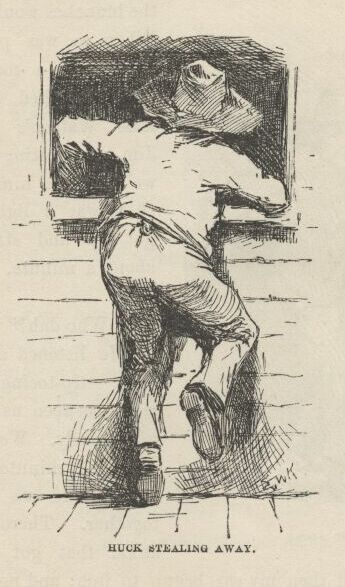
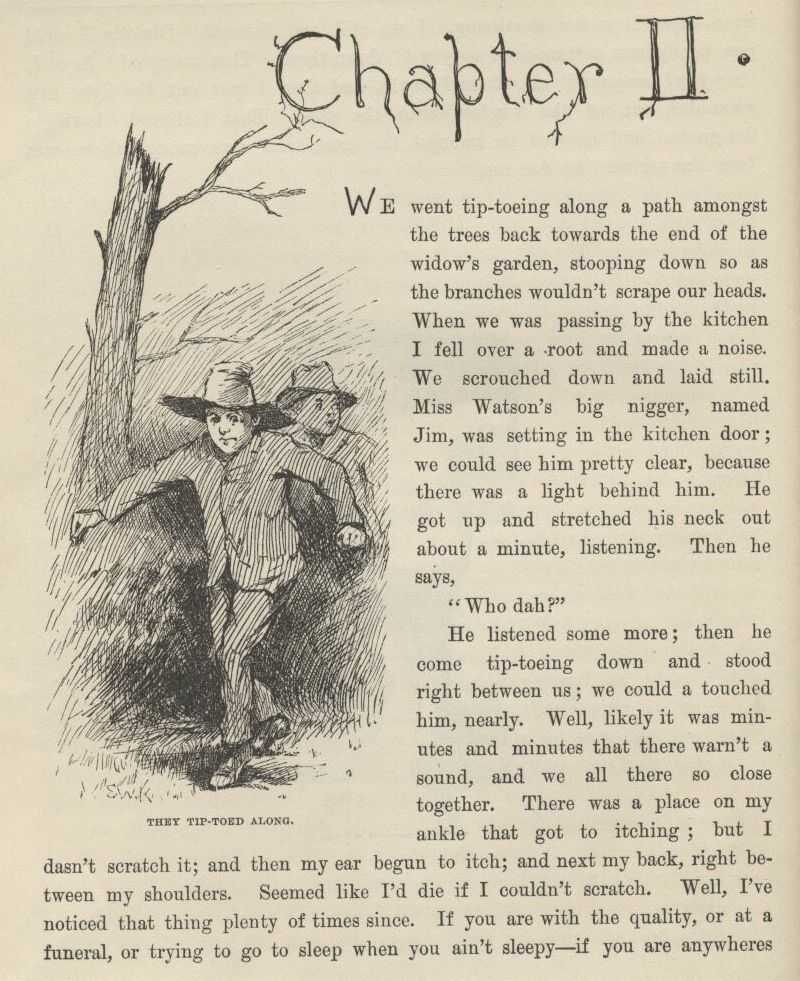
CHAPTER II.
WE went tiptoeing along a path amongst the trees back towards the end of the widow's
garden, stooping down so as the branches wouldn't scrape our heads. When we was passing
by the kitchen I fell over a root and made a noise. We scrouched down and laid still.
Miss Watson's big nigger, named Jim, was setting in the kitchen door; we could see
him pretty clear, because there was a light behind him. He got up and stretched his
neck out about a minute, listening. Then he says:
"Who dah?"
He listened some more; then he come tiptoeing down and stood right between us; we
could a touched him, nearly. Well, likely it was minutes and minutes that there warn't
a sound, and we all there so close together. There was a place on my ankle that got
to itching, but I dasn't scratch it; and then my ear begun to itch; and next my back,
right between my shoulders. Seemed like I'd die if I couldn't scratch. Well, I've
noticed that thing plenty times since. If you are with the quality, or at a funeral,
or trying to go to sleep when you ain't sleepy—if you are anywheres where it won't
do for you to scratch, why you will itch all over in upwards of a thousand places.
Pretty soon Jim says:
"Say, who is you? Whar is you? Dog my cats ef I didn' hear sumf'n. Well, I know
what I's gwyne to do: I's gwyne to set down here and listen tell I hears it agin."
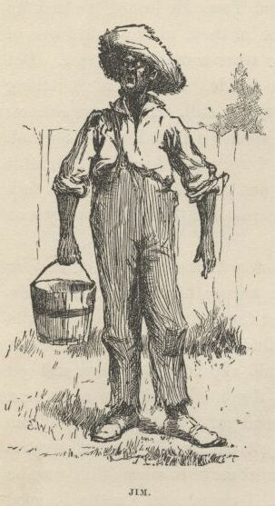
So he set down on the ground betwixt me and Tom. He leaned his back up against a
tree, and stretched his legs out till one of them most touched one of mine. My nose
begun to itch. It itched till the tears come into my eyes. But I dasn't scratch.
Then it begun to itch on the inside. Next I got to itching underneath. I didn't
know how I was going to set still. This miserableness went on as much as six or seven
minutes; but it seemed a sight longer than that. I was itching in eleven different
places now. I reckoned I couldn't stand it more'n a minute longer, but I set my teeth
hard and got ready to try. Just then Jim begun to breathe heavy; next he begun to
snore—and then I was pretty soon comfortable again.
Tom he made a sign to me—kind of a little noise with his mouth—and we went creeping
away on our hands and knees. When we was ten foot off Tom whispered to me, and wanted
to tie Jim to the tree for fun. But I said no; he might wake and make a disturbance,
and then they'd find out I warn't in. Then Tom said he hadn't got candles enough,
and he would slip in the kitchen and get some more. I didn't want him to try. I
said Jim might wake up and come. But Tom wanted to resk it; so we slid in there and
got three candles, and Tom laid five cents on the table for pay. Then we got out,
and I was in a sweat to get away; but nothing would do Tom but he must crawl to where
Jim was, on his hands and knees, and play something on him. I waited, and it seemed
a good while, everything was so still and lonesome.
As soon as Tom was back we cut along the path, around the garden fence, and by and
by fetched up on the steep top of the hill the other side of the house. Tom said
he slipped Jim's hat off of his head and hung it on a limb right over him, and Jim
stirred a little, but he didn't wake. Afterwards Jim said the witches be witched him
and put him in a trance, and rode him all over the State, and then set him under the
trees again, and hung his hat on a limb to show who done it. And next time Jim told
it he said they rode him down to New Orleans; and, after that, every time he told
it he spread it more and more, till by and by he said they rode him all over the world,
and tired him most to death, and his back was all over saddle-boils. Jim was monstrous
proud about it, and he got so he wouldn't hardly notice the other niggers. Niggers
would come miles to hear Jim tell about it, and he was more looked up to than any
nigger in that country. Strange niggers would stand with their mouths open and look
him all over, same as if he was a wonder. Niggers is always talking about witches
in the dark by the kitchen fire; but whenever one was talking and letting on to know
all about such things, Jim would happen in and say, "Hm! What you know 'bout witches?"
and that nigger was corked up and had to take a back seat. Jim always kept that five-center
piece round his neck with a string, and said it was a charm the devil give to him
with his own hands, and told him he could cure anybody with it and fetch witches whenever
he wanted to just by saying something to it; but he never told what it was he said
to it. Niggers would come from all around there and give Jim anything they had, just
for a sight of that five-center piece; but they wouldn't touch it, because the devil
had had his hands on it. Jim was most ruined for a servant, because he got stuck
up on account of having seen the devil and been rode by witches.
Well, when Tom and me got to the edge of the hilltop we looked away down into the
village and could see three or four lights twinkling, where there was sick folks,
maybe; and the stars over us was sparkling ever so fine; and down by the village was
the river, a whole mile broad, and awful still and grand. We went down the hill and
found Jo Harper and Ben Rogers, and two or three more of the boys, hid in the old
tanyard. So we unhitched a skiff and pulled down the river two mile and a half, to
the big scar on the hillside, and went ashore.
We went to a clump of bushes, and Tom made everybody swear to keep the secret, and
then showed them a hole in the hill, right in the thickest part of the bushes. Then
we lit the candles, and crawled in on our hands and knees. We went about two hundred
yards, and then the cave opened up. Tom poked about amongst the passages, and pretty
soon ducked under a wall where you wouldn't a noticed that there was a hole. We went
along a narrow place and got into a kind of room, all damp and sweaty and cold, and
there we stopped. Tom says:
"Now, we'll start this band of robbers and call it Tom Sawyer's Gang. Everybody that
wants to join has got to take an oath, and write his name in blood."
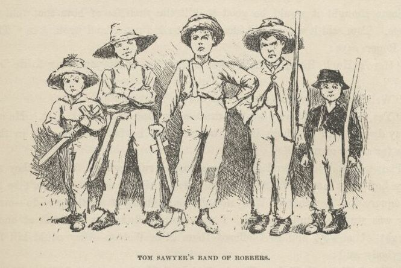
Everybody was willing. So Tom got out a sheet of paper that he had wrote the oath
on, and read it. It swore every boy to stick to the band, and never tell any of the
secrets; and if anybody done anything to any boy in the band, whichever boy was ordered
to kill that person and his family must do it, and he mustn't eat and he mustn't sleep
till he had killed them and hacked a cross in their breasts, which was the sign of
the band. And nobody that didn't belong to the band could use that mark, and if he
did he must be sued; and if he done it again he must be killed. And if anybody that
belonged to the band told the secrets, he must have his throat cut, and then have
his carcass burnt up and the ashes scattered all around, and his name blotted off
of the list with blood and never mentioned again by the gang, but have a curse put
on it and be forgot forever.
Everybody said it was a real beautiful oath, and asked Tom if he got it out of his
own head. He said, some of it, but the rest was out of pirate-books and robber-books,
and every gang that was high-toned had it.
Some thought it would be good to kill the families of boys that told the secrets. Tom said it was a good idea, so he took a pencil
and wrote it in. Then Ben Rogers says:
"Here's Huck Finn, he hain't got no family; what you going to do 'bout him?"
"Well, hain't he got a father?" says Tom Sawyer.
"Yes, he's got a father, but you can't never find him these days. He used to lay
drunk with the hogs in the tanyard, but he hain't been seen in these parts for a year
or more."
They talked it over, and they was going to rule me out, because they said every boy
must have a family or somebody to kill, or else it wouldn't be fair and square for
the others. Well, nobody could think of anything to do—everybody was stumped, and
set still. I was most ready to cry; but all at once I thought of a way, and so I
offered them Miss Watson—they could kill her. Everybody said:
"Oh, she'll do. That's all right. Huck can come in."
Then they all stuck a pin in their fingers to get blood to sign with, and I made my
mark on the paper.
"Now," says Ben Rogers, "what's the line of business of this Gang?"
"Nothing only robbery and murder," Tom said.
"But who are we going to rob?—houses, or cattle, or—"
"Stuff! stealing cattle and such things ain't robbery; it's burglary," says Tom Sawyer.
"We ain't burglars. That ain't no sort of style. We are highwaymen. We stop stages
and carriages on the road, with masks on, and kill the people and take their watches
and money."
"Must we always kill the people?"
"Oh, certainly. It's best. Some authorities think different, but mostly it's considered
best to kill them—except some that you bring to the cave here, and keep them till
they're ransomed."
"Ransomed? What's that?"
"I don't know. But that's what they do. I've seen it in books; and so of course
that's what we've got to do."
"But how can we do it if we don't know what it is?"
"Why, blame it all, we've got to do it. Don't I tell you it's in the books? Do you want to go to doing different
from what's in the books, and get things all muddled up?"
"Oh, that's all very fine to say, Tom Sawyer, but how in the nation are these fellows going to be ransomed if we don't
know how to do it to them?—that's the thing I want to get at. Now, what do you reckon
it is?"
"Well, I don't know. But per'aps if we keep them till they're ransomed, it means
that we keep them till they're dead."
"Now, that's something like. That'll answer. Why couldn't you said that before? We'll keep them till they're
ransomed to death; and a bothersome lot they'll be, too—eating up everything, and
always trying to get loose."
"How you talk, Ben Rogers. How can they get loose when there's a guard over them,
ready to shoot them down if they move a peg?"
"A guard! Well, that is good. So somebody's got to set up all night and never get any sleep, just so as
to watch them. I think that's foolishness. Why can't a body take a club and ransom
them as soon as they get here?"
"Because it ain't in the books so—that's why. Now, Ben Rogers, do you want to do
things regular, or don't you?—that's the idea. Don't you reckon that the people that
made the books knows what's the correct thing to do? Do you reckon you can learn 'em anything? Not by a good deal. No, sir, we'll just go on and ransom
them in the regular way."
"All right. I don't mind; but I say it's a fool way, anyhow. Say, do we kill the
women, too?"
"Well, Ben Rogers, if I was as ignorant as you I wouldn't let on. Kill the women?
No; nobody ever saw anything in the books like that. You fetch them to the cave,
and you're always as polite as pie to them; and by and by they fall in love with you,
and never want to go home any more."
"Well, if that's the way I'm agreed, but I don't take no stock in it. Mighty soon
we'll have the cave so cluttered up with women, and fellows waiting to be ransomed,
that there won't be no place for the robbers. But go ahead, I ain't got nothing to
say."
Little Tommy Barnes was asleep now, and when they waked him up he was scared, and
cried, and said he wanted to go home to his ma, and didn't want to be a robber any
more.
So they all made fun of him, and called him cry-baby, and that made him mad, and he
said he would go straight and tell all the secrets. But Tom give him five cents to
keep quiet, and said we would all go home and meet next week, and rob somebody and
kill some people.
Ben Rogers said he couldn't get out much, only Sundays, and so he wanted to begin
next Sunday; but all the boys said it would be wicked to do it on Sunday, and that
settled the thing. They agreed to get together and fix a day as soon as they could,
and then we elected Tom Sawyer first captain and Jo Harper second captain of the Gang,
and so started home.
I clumb up the shed and crept into my window just before day was breaking. My new
clothes was all greased up and clayey, and I was dog-tired.
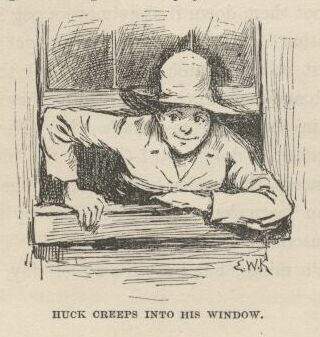
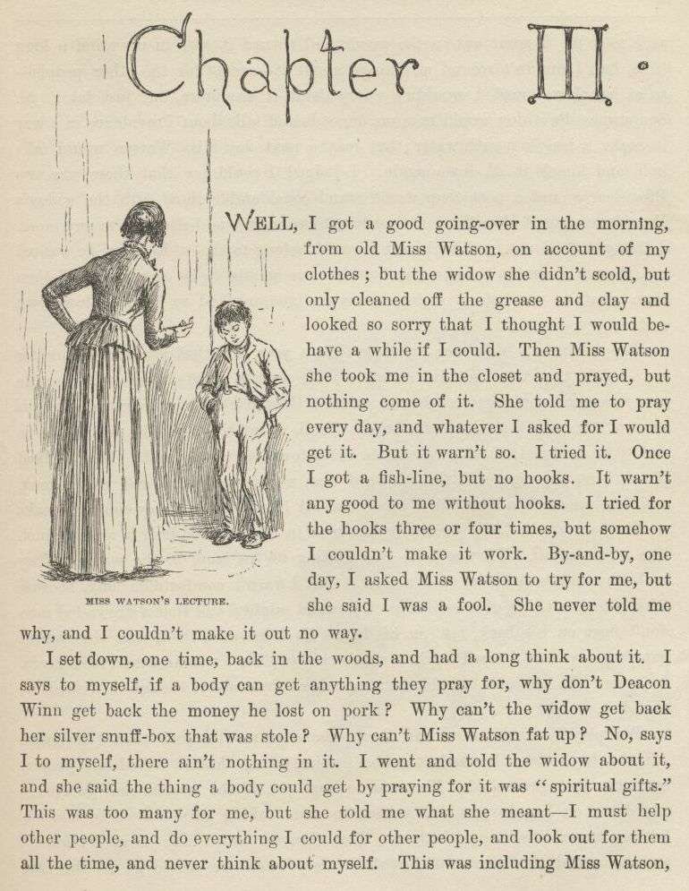
CHAPTER III.
WELL, I got a good going-over in the morning from old Miss Watson on account of my
clothes; but the widow she didn't scold, but only cleaned off the grease and clay,
and looked so sorry that I thought I would behave awhile if I could. Then Miss Watson
she took me in the closet and prayed, but nothing come of it. She told me to pray
every day, and whatever I asked for I would get it. But it warn't so. I tried it.
Once I got a fish-line, but no hooks. It warn't any good to me without hooks. I
tried for the hooks three or four times, but somehow I couldn't make it work. By
and by, one day, I asked Miss Watson to try for me, but she said I was a fool. She
never told me why, and I couldn't make it out no way.
I set down one time back in the woods, and had a long think about it. I says to myself,
if a body can get anything they pray for, why don't Deacon Winn get back the money
he lost on pork? Why can't the widow get back her silver snuffbox that was stole?
Why can't Miss Watson fat up? No, says I to my self, there ain't nothing in it. I
went and told the widow about it, and she said the thing a body could get by praying
for it was "spiritual gifts." This was too many for me, but she told me what she
meant—I must help other people, and do everything I could for other people, and look
out for them all the time, and never think about myself. This was including Miss Watson,
as I took it. I went out in the woods and turned it over in my mind a long time,
but I couldn't see no advantage about it—except for the other people; so at last I
reckoned I wouldn't worry about it any more, but just let it go. Sometimes the widow
would take me one side and talk about Providence in a way to make a body's mouth water;
but maybe next day Miss Watson would take hold and knock it all down again. I judged
I could see that there was two Providences, and a poor chap would stand considerable
show with the widow's Providence, but if Miss Watson's got him there warn't no help
for him any more. I thought it all out, and reckoned I would belong to the widow's
if he wanted me, though I couldn't make out how he was a-going to be any better off
then than what he was before, seeing I was so ignorant, and so kind of low-down and
ornery.
Pap he hadn't been seen for more than a year, and that was comfortable for me; I didn't
want to see him no more. He used to always whale me when he was sober and could get
his hands on me; though I used to take to the woods most of the time when he was around.
Well, about this time he was found in the river drownded, about twelve mile above
town, so people said. They judged it was him, anyway; said this drownded man was
just his size, and was ragged, and had uncommon long hair, which was all like pap;
but they couldn't make nothing out of the face, because it had been in the water so
long it warn't much like a face at all. They said he was floating on his back in
the water. They took him and buried him on the bank. But I warn't comfortable long,
because I happened to think of something. I knowed mighty well that a drownded man
don't float on his back, but on his face. So I knowed, then, that this warn't pap,
but a woman dressed up in a man's clothes. So I was uncomfortable again. I judged
the old man would turn up again by and by, though I wished he wouldn't.
We played robber now and then about a month, and then I resigned. All the boys did.
We hadn't robbed nobody, hadn't killed any people, but only just pretended. We used
to hop out of the woods and go charging down on hog-drivers and women in carts taking
garden stuff to market, but we never hived any of them. Tom Sawyer called the hogs
"ingots," and he called the turnips and stuff "julery," and we would go to the cave
and powwow over what we had done, and how many people we had killed and marked. But
I couldn't see no profit in it. One time Tom sent a boy to run about town with a
blazing stick, which he called a slogan (which was the sign for the Gang to get together),
and then he said he had got secret news by his spies that next day a whole parcel
of Spanish merchants and rich A-rabs was going to camp in Cave Hollow with two hundred
elephants, and six hundred camels, and over a thousand "sumter" mules, all loaded
down with di'monds, and they didn't have only a guard of four hundred soldiers, and
so we would lay in ambuscade, as he called it, and kill the lot and scoop the things.
He said we must slick up our swords and guns, and get ready. He never could go after
even a turnip-cart but he must have the swords and guns all scoured up for it, though
they was only lath and broomsticks, and you might scour at them till you rotted, and
then they warn't worth a mouthful of ashes more than what they was before. I didn't
believe we could lick such a crowd of Spaniards and A-rabs, but I wanted to see the
camels and elephants, so I was on hand next day, Saturday, in the ambuscade; and when
we got the word we rushed out of the woods and down the hill. But there warn't no
Spaniards and A-rabs, and there warn't no camels nor no elephants. It warn't anything
but a Sunday-school picnic, and only a primer-class at that. We busted it up, and
chased the children up the hollow; but we never got anything but some doughnuts and
jam, though Ben Rogers got a rag doll, and Jo Harper got a hymn-book and a tract;
and then the teacher charged in, and made us drop everything and cut.
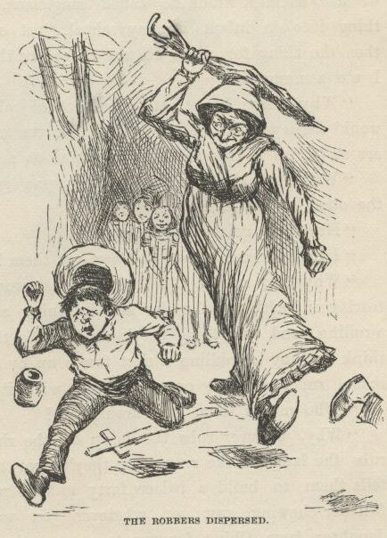
I didn't see no di'monds, and I told Tom Sawyer so. He said there was loads of them
there, anyway; and he said there was A-rabs there, too, and elephants and things.
I said, why couldn't we see them, then? He said if I warn't so ignorant, but had
read a book called Don Quixote, I would know without asking. He said it was all done
by enchantment. He said there was hundreds of soldiers there, and elephants and treasure,
and so on, but we had enemies which he called magicians; and they had turned the whole
thing into an infant Sunday-school, just out of spite. I said, all right; then the
thing for us to do was to go for the magicians. Tom Sawyer said I was a numskull.
"Why," said he, "a magician could call up a lot of genies, and they would hash you
up like nothing before you could say Jack Robinson. They are as tall as a tree and
as big around as a church."
"Well," I says, "s'pose we got some genies to help us—can't we lick the other crowd then?"
"How you going to get them?"
"I don't know. How do they get them?"
"Why, they rub an old tin lamp or an iron ring, and then the genies come tearing in,
with the thunder and lightning a-ripping around and the smoke a-rolling, and everything
they're told to do they up and do it. They don't think nothing of pulling a shot-tower
up by the roots, and belting a Sunday-school superintendent over the head with it—or
any other man."
"Who makes them tear around so?"
"Why, whoever rubs the lamp or the ring. They belong to whoever rubs the lamp or
the ring, and they've got to do whatever he says. If he tells them to build a palace
forty miles long out of di'monds, and fill it full of chewing-gum, or whatever you
want, and fetch an emperor's daughter from China for you to marry, they've got to
do it—and they've got to do it before sun-up next morning, too. And more: they've
got to waltz that palace around over the country wherever you want it, you understand."
"Well," says I, "I think they are a pack of flat-heads for not keeping the palace
themselves 'stead of fooling them away like that. And what's more—if I was one of
them I would see a man in Jericho before I would drop my business and come to him
for the rubbing of an old tin lamp."
"How you talk, Huck Finn. Why, you'd have to come when he rubbed it, whether you wanted to or not."
"What! and I as high as a tree and as big as a church? All right, then; I would come; but I lay I'd make that man climb the highest tree there was in the country."
"Shucks, it ain't no use to talk to you, Huck Finn. You don't seem to know anything,
somehow—perfect saphead."
I thought all this over for two or three days, and then I reckoned I would see if
there was anything in it. I got an old tin lamp and an iron ring, and went out in
the woods and rubbed and rubbed till I sweat like an Injun, calculating to build a
palace and sell it; but it warn't no use, none of the genies come. So then I judged
that all that stuff was only just one of Tom Sawyer's lies. I reckoned he believed
in the A-rabs and the elephants, but as for me I think different. It had all the
marks of a Sunday-school.
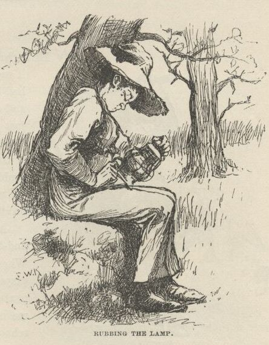
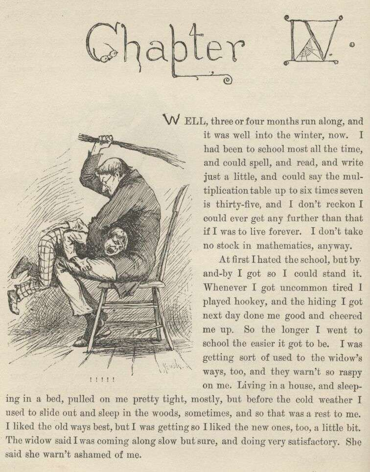
CHAPTER IV.
WELL, three or four months run along, and it was well into the winter now. I had been
to school most all the time and could spell and read and write just a little, and
could say the multiplication table up to six times seven is thirty-five, and I don't
reckon I could ever get any further than that if I was to live forever. I don't take
no stock in mathematics, anyway.
At first I hated the school, but by and by I got so I could stand it. Whenever I got
uncommon tired I played hookey, and the hiding I got next day done me good and cheered
me up. So the longer I went to school the easier it got to be. I was getting sort
of used to the widow's ways, too, and they warn't so raspy on me. Living in a house
and sleeping in a bed pulled on me pretty tight mostly, but before the cold weather
I used to slide out and sleep in the woods sometimes, and so that was a rest to me.
I liked the old ways best, but I was getting so I liked the new ones, too, a little
bit. The widow said I was coming along slow but sure, and doing very satisfactory.
She said she warn't ashamed of me.
One morning I happened to turn over the salt-cellar at breakfast. I reached for some
of it as quick as I could to throw over my left shoulder and keep off the bad luck,
but Miss Watson was in ahead of me, and crossed me off. She says, "Take your hands
away, Huckleberry; what a mess you are always making!" The widow put in a good word
for me, but that warn't going to keep off the bad luck, I knowed that well enough.
I started out, after breakfast, feeling worried and shaky, and wondering where it
was going to fall on me, and what it was going to be. There is ways to keep off some
kinds of bad luck, but this wasn't one of them kind; so I never tried to do anything,
but just poked along low-spirited and on the watch-out.
I went down to the front garden and clumb over the stile where you go through the
high board fence. There was an inch of new snow on the ground, and I seen somebody's
tracks. They had come up from the quarry and stood around the stile a while, and
then went on around the garden fence. It was funny they hadn't come in, after standing
around so. I couldn't make it out. It was very curious, somehow. I was going to
follow around, but I stooped down to look at the tracks first. I didn't notice anything
at first, but next I did. There was a cross in the left boot-heel made with big nails,
to keep off the devil.
I was up in a second and shinning down the hill. I looked over my shoulder every
now and then, but I didn't see nobody. I was at Judge Thatcher's as quick as I could
get there. He said:
"Why, my boy, you are all out of breath. Did you come for your interest?"
"No, sir," I says; "is there some for me?"
"Oh, yes, a half-yearly is in last night—over a hundred and fifty dollars. Quite
a fortune for you. You had better let me invest it along with your six thousand,
because if you take it you'll spend it."
"No, sir," I says, "I don't want to spend it. I don't want it at all—nor the six
thousand, nuther. I want you to take it; I want to give it to you—the six thousand
and all."
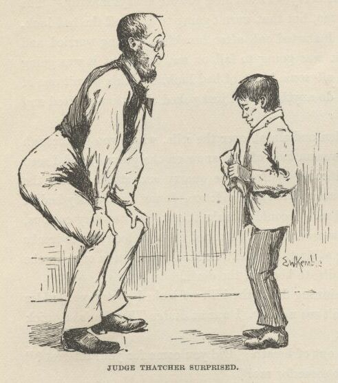
He looked surprised. He couldn't seem to make it out. He says:
"Why, what can you mean, my boy?"
I says, "Don't you ask me no questions about it, please. You'll take it—won't you?"
He says:
"Well, I'm puzzled. Is something the matter?"
"Please take it," says I, "and don't ask me nothing—then I won't have to tell no lies."
He studied a while, and then he says:
"Oho-o! I think I see. You want to sell all your property to me—not give it. That's the correct idea."
Then he wrote something on a paper and read it over, and says:
"There; you see it says 'for a consideration.' That means I have bought it of you
and paid you for it. Here's a dollar for you. Now you sign it."
So I signed it, and left.
Miss Watson's nigger, Jim, had a hair-ball as big as your fist, which had been took
out of the fourth stomach of an ox, and he used to do magic with it. He said there
was a spirit inside of it, and it knowed everything. So I went to him that night
and told him pap was here again, for I found his tracks in the snow. What I wanted
to know was, what he was going to do, and was he going to stay? Jim got out his hair-ball
and said something over it, and then he held it up and dropped it on the floor. It
fell pretty solid, and only rolled about an inch. Jim tried it again, and then another
time, and it acted just the same. Jim got down on his knees, and put his ear against
it and listened. But it warn't no use; he said it wouldn't talk. He said sometimes
it wouldn't talk without money. I told him I had an old slick counterfeit quarter
that warn't no good because the brass showed through the silver a little, and it wouldn't
pass nohow, even if the brass didn't show, because it was so slick it felt greasy,
and so that would tell on it every time. (I reckoned I wouldn't say nothing about
the dollar I got from the judge.) I said it was pretty bad money, but maybe the hair-ball
would take it, because maybe it wouldn't know the difference. Jim smelt it and bit
it and rubbed it, and said he would manage so the hair-ball would think it was good.
He said he would split open a raw Irish potato and stick the quarter in between and
keep it there all night, and next morning you couldn't see no brass, and it wouldn't
feel greasy no more, and so anybody in town would take it in a minute, let alone a
hair-ball. Well, I knowed a potato would do that before, but I had forgot it.
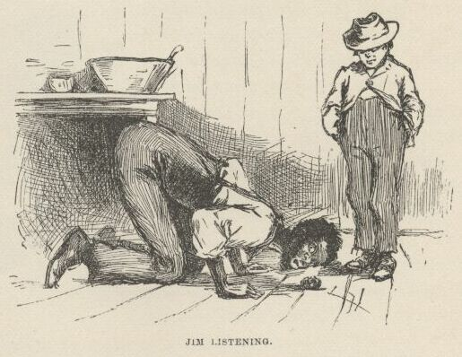
Jim put the quarter under the hair-ball, and got down and listened again. This time
he said the hair-ball was all right. He said it would tell my whole fortune if I
wanted it to. I says, go on. So the hair-ball talked to Jim, and Jim told it to
me. He says:
"Yo' ole father doan' know yit what he's a-gwyne to do. Sometimes he spec he'll go
'way, en den agin he spec he'll stay. De bes' way is to res' easy en let de ole man
take his own way. Dey's two angels hoverin' roun' 'bout him. One uv 'em is white
en shiny, en t'other one is black. De white one gits him to go right a little while,
den de black one sail in en bust it all up. A body can't tell yit which one gwyne
to fetch him at de las'. But you is all right. You gwyne to have considable trouble
in yo' life, en considable joy. Sometimes you gwyne to git hurt, en sometimes you
gwyne to git sick; but every time you's gwyne to git well agin. Dey's two gals flyin'
'bout you in yo' life. One uv 'em's light en t'other one is dark. One is rich en
t'other is po'. You's gwyne to marry de po' one fust en de rich one by en by. You
wants to keep 'way fum de water as much as you kin, en don't run no resk, 'kase it's
down in de bills dat you's gwyne to git hung."
When I lit my candle and went up to my room that night there sat pap his own self!
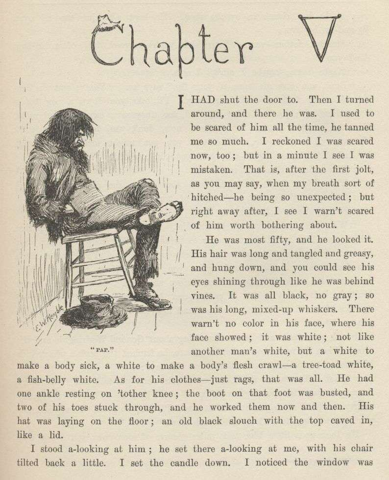
CHAPTER V.
I had shut the door to. Then I turned around and there he was. I used to be scared
of him all the time, he tanned me so much. I reckoned I was scared now, too; but
in a minute I see I was mistaken—that is, after the first jolt, as you may say, when
my breath sort of hitched, he being so unexpected; but right away after I see I warn't
scared of him worth bothring about.
He was most fifty, and he looked it. His hair was long and tangled and greasy, and
hung down, and you could see his eyes shining through like he was behind vines. It
was all black, no gray; so was his long, mixed-up whiskers. There warn't no color
in his face, where his face showed; it was white; not like another man's white, but
a white to make a body sick, a white to make a body's flesh crawl—a tree-toad white,
a fish-belly white. As for his clothes—just rags, that was all. He had one ankle
resting on t'other knee; the boot on that foot was busted, and two of his toes stuck
through, and he worked them now and then. His hat was laying on the floor—an old
black slouch with the top caved in, like a lid.
I stood a-looking at him; he set there a-looking at me, with his chair tilted back
a little. I set the candle down. I noticed the window was up; so he had clumb in
by the shed. He kept a-looking me all over. By and by he says:
"Starchy clothes—very. You think you're a good deal of a big-bug, don't you?"
"Maybe I am, maybe I ain't," I says.
"Don't you give me none o' your lip," says he. "You've put on considerable many frills
since I been away. I'll take you down a peg before I get done with you. You're educated,
too, they say—can read and write. You think you're better'n your father, now, don't
you, because he can't? I'll take it out of you. Who told you you might meddle with such hifalut'n foolishness,
hey?—who told you you could?"
"The widow. She told me."
"The widow, hey?—and who told the widow she could put in her shovel about a thing
that ain't none of her business?"
"Nobody never told her."
"Well, I'll learn her how to meddle. And looky here—you drop that school, you hear?
I'll learn people to bring up a boy to put on airs over his own father and let on
to be better'n what he is. You lemme catch you fooling around that school again, you hear? Your mother
couldn't read, and she couldn't write, nuther, before she died. None of the family
couldn't before they died. I can't; and here you're a-swelling yourself up like this. I ain't the man
to stand it—you hear? Say, lemme hear you read."
I took up a book and begun something about General Washington and the wars. When I'd
read about a half a minute, he fetched the book a whack with his hand and knocked
it across the house. He says:
"It's so. You can do it. I had my doubts when you told me. Now looky here; you
stop that putting on frills. I won't have it. I'll lay for you, my smarty; and if
I catch you about that school I'll tan you good. First you know you'll get religion,
too. I never see such a son."
He took up a little blue and yaller picture of some cows and a boy, and says:
"What's this?"
"It's something they give me for learning my lessons good."
He tore it up, and says:
"I'll give you something better—I'll give you a cowhide."
He set there a-mumbling and a-growling a minute, and then he says:
"Ain't you a sweet-scented dandy, though? A bed; and bedclothes; and a look'n'-glass; and
a piece of carpet on the floor—and your own father got to sleep with the hogs in the
tanyard. I never see such a son. I bet I'll take some o' these frills out o' you
before I'm done with you. Why, there ain't no end to your airs—they say you're rich.
Hey?—how's that?"
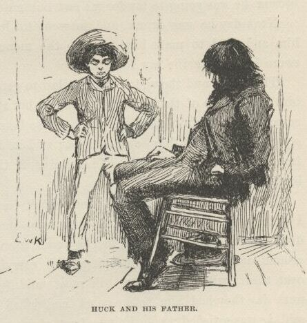
"They lie—that's how."
"Looky here—mind how you talk to me; I'm a-standing about all I can stand now—so don't
gimme no sass. I've been in town two days, and I hain't heard nothing but about you
bein' rich. I heard about it away down the river, too. That's why I come. You git
me that money to-morrow—I want it."
"I hain't got no money."
"It's a lie. Judge Thatcher's got it. You git it. I want it."
"I hain't got no money, I tell you. You ask Judge Thatcher; he'll tell you the same."
"All right. I'll ask him; and I'll make him pungle, too, or I'll know the reason
why. Say, how much you got in your pocket? I want it."
"I hain't got only a dollar, and I want that to—"
"It don't make no difference what you want it for—you just shell it out."
He took it and bit it to see if it was good, and then he said he was going down town
to get some whisky; said he hadn't had a drink all day. When he had got out on the
shed he put his head in again, and cussed me for putting on frills and trying to be
better than him; and when I reckoned he was gone he come back and put his head in
again, and told me to mind about that school, because he was going to lay for me and
lick me if I didn't drop that.
Next day he was drunk, and he went to Judge Thatcher's and bullyragged him, and tried
to make him give up the money; but he couldn't, and then he swore he'd make the law
force him.
The judge and the widow went to law to get the court to take me away from him and
let one of them be my guardian; but it was a new judge that had just come, and he
didn't know the old man; so he said courts mustn't interfere and separate families
if they could help it; said he'd druther not take a child away from its father. So
Judge Thatcher and the widow had to quit on the business.
That pleased the old man till he couldn't rest. He said he'd cowhide me till I was
black and blue if I didn't raise some money for him. I borrowed three dollars from
Judge Thatcher, and pap took it and got drunk, and went a-blowing around and cussing
and whooping and carrying on; and he kept it up all over town, with a tin pan, till
most midnight; then they jailed him, and next day they had him before court, and jailed
him again for a week. But he said he was satisfied; said he was boss of his son, and he'd make it warm for him.
When he got out the new judge said he was a-going to make a man of him. So he took
him to his own house, and dressed him up clean and nice, and had him to breakfast
and dinner and supper with the family, and was just old pie to him, so to speak. And
after supper he talked to him about temperance and such things till the old man cried,
and said he'd been a fool, and fooled away his life; but now he was a-going to turn
over a new leaf and be a man nobody wouldn't be ashamed of, and he hoped the judge
would help him and not look down on him. The judge said he could hug him for them
words; so he cried, and his wife she cried again; pap said he'd been a man that had
always been misunderstood before, and the judge said he believed it. The old man
said that what a man wanted that was down was sympathy, and the judge said it was
so; so they cried again. And when it was bedtime the old man rose up and held out
his hand, and says:
"Look at it, gentlemen and ladies all; take a-hold of it; shake it. There's a hand
that was the hand of a hog; but it ain't so no more; it's the hand of a man that's
started in on a new life, and'll die before he'll go back. You mark them words—don't
forget I said them. It's a clean hand now; shake it—don't be afeard."
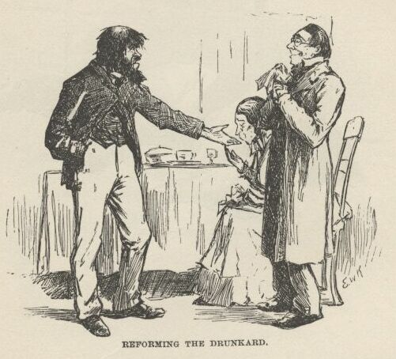
So they shook it, one after the other, all around, and cried. The judge's wife she
kissed it. Then the old man he signed a pledge—made his mark. The judge said it was
the holiest time on record, or something like that. Then they tucked the old man into
a beautiful room, which was the spare room, and in the night some time he got powerful
thirsty and clumb out on to the porch-roof and slid down a stanchion and traded his
new coat for a jug of forty-rod, and clumb back again and had a good old time; and
towards daylight he crawled out again, drunk as a fiddler, and rolled off the porch
and broke his left arm in two places, and was most froze to death when somebody found
him after sun-up. And when they come to look at that spare room they had to take
soundings before they could navigate it.
The judge he felt kind of sore. He said he reckoned a body could reform the old man
with a shotgun, maybe, but he didn't know no other way.
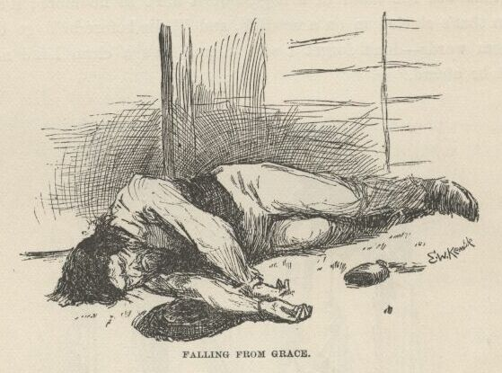
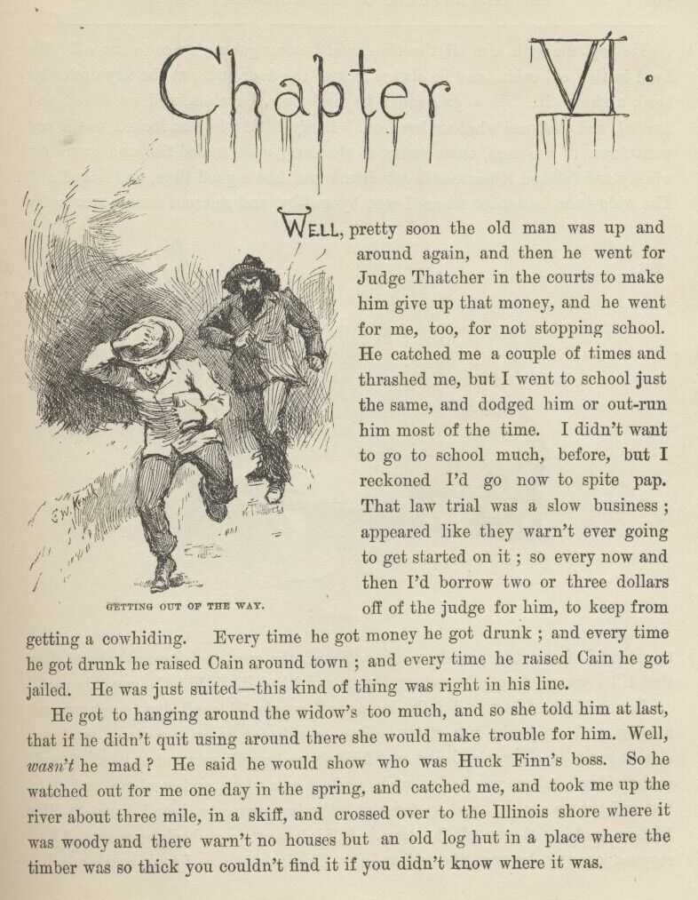
CHAPTER VI.
WELL, pretty soon the old man was up and around again, and then he went for Judge
Thatcher in the courts to make him give up that money, and he went for me, too, for
not stopping school. He catched me a couple of times and thrashed me, but I went
to school just the same, and dodged him or outrun him most of the time. I didn't
want to go to school much before, but I reckoned I'd go now to spite pap. That law
trial was a slow business—appeared like they warn't ever going to get started on it;
so every now and then I'd borrow two or three dollars off of the judge for him, to
keep from getting a cowhiding. Every time he got money he got drunk; and every time
he got drunk he raised Cain around town; and every time he raised Cain he got jailed.
He was just suited—this kind of thing was right in his line.
He got to hanging around the widow's too much and so she told him at last that if
he didn't quit using around there she would make trouble for him. Well, wasn't he mad? He said he would show who was Huck Finn's boss. So he watched out for me
one day in the spring, and catched me, and took me up the river about three mile in
a skiff, and crossed over to the Illinois shore where it was woody and there warn't
no houses but an old log hut in a place where the timber was so thick you couldn't
find it if you didn't know where it was.
He kept me with him all the time, and I never got a chance to run off. We lived in
that old cabin, and he always locked the door and put the key under his head nights.
He had a gun which he had stole, I reckon, and we fished and hunted, and that was
what we lived on. Every little while he locked me in and went down to the store,
three miles, to the ferry, and traded fish and game for whisky, and fetched it home
and got drunk and had a good time, and licked me. The widow she found out where I
was by and by, and she sent a man over to try to get hold of me; but pap drove him
off with the gun, and it warn't long after that till I was used to being where I was,
and liked it—all but the cowhide part.
It was kind of lazy and jolly, laying off comfortable all day, smoking and fishing,
and no books nor study. Two months or more run along, and my clothes got to be all
rags and dirt, and I didn't see how I'd ever got to like it so well at the widow's,
where you had to wash, and eat on a plate, and comb up, and go to bed and get up regular,
and be forever bothering over a book, and have old Miss Watson pecking at you all
the time. I didn't want to go back no more. I had stopped cussing, because the widow
didn't like it; but now I took to it again because pap hadn't no objections. It was
pretty good times up in the woods there, take it all around.